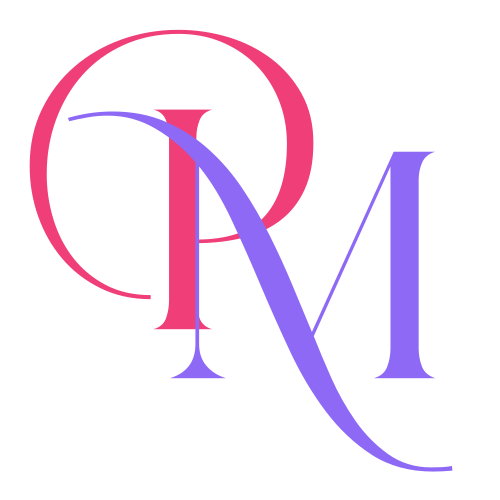

PinayMate Tokens Dark · token-readyPinayMate Design System
Primitive → semantic tokens, pulled from src/theme/. Complete brand ramps (amihan / dalisay / luna,
50→950) + neutral, each promoted step tagged to its semantic role; status families are intentionally compact. Brand
mark, platform standards (Material 3 + Apple HIG), typography (Lora + DM Sans — 2-font system), icon sizes, spacing & radii.
Light is the shipping theme; dark is implemented in code (lightColors/darkColors
+ useTheme(), verified by tests) but not yet live in-app — it switches on once components adopt the
tokens and userInterfaceStyle flips to automatic. Contrast computed live (WCAG 2.x).
The PinayMate wordmark, set in the primary amihan pink (#EF3E78). Single-file
vector; the no-background variant sits on any neutral ground. Use the supplied PNGs for launcher/splash/favicon.
assets/images/ (icon.png, splash-icon.png, adaptive set).PinayMate ships to iOS & Android, so the token system targets both rulebooks at once. Each card shows the iOS (Apple Human Interface Guidelines) value, the Android (Material 3) value, and what PinayMate actually does. ✓ = meets both · ◐ = built, not yet live · ⚠ = best-practice gap.
How the same tokens adapt for the selected target. One source of truth, three lenses — the CTA below also re-renders its depth treatment.
spacing is a 4dp base (xs4 → xxxl64) — multiples of 4/8.bodyLarge 16. Dynamic Type / font-scaling on by default.react-native-safe-area-context.useTheme() ready; switches on after adoption (userInterfaceStyle→automatic).minTouch token / hitSlop yet — small icon/text buttons aren't guaranteed 44–48. Add minTouch: 48 and apply to all pressables.borderRadius sm4 → xl16 + full (pill) — PrimaryButton is a 28 pill.Status after the 2026-06-01 token rebuild. ✓ = done (in code) · ◐ = built, not yet live · ⚠ = remaining.
bodyLarge 16 · caption 14. Anchors the type ramp at the mobile minimum.textStyles now use lineHeightFor(size, ratio) → absolute points. No more collapsed lines.lightColors/darkColors + useTheme() shipped & tested. Goes live after adoption (userInterfaceStyle→automatic).tailwind.config.js re-synced to colors.ts (incl. neutral.black + new steps).Role → light token → dark token. Both are now in colors.ts
(lightColors / darkColors); every value is exact.
Lora (serif) — display, headers h1–h5, and the text brand wordmark.
DM Sans — body, UI, captions, controls. The primary brand mark is the SVG logo, not a font
(HelloParis was dropped to keep a clean two-typeface system). Sizes are fixed logical px from fontSizes;
role names are the textStyles keys.
textStyles now use lineHeightFor(size, ratio) → absolute points (shown in px above), the React Native-correct unit. The old unitless ratios that collapsed multi-line text are gone (audit C2 resolved).Glyphs come from lucide-react-native (SVG), sized by the iconSizes token (added in the rebuild,
mirrors fontSizes). Default UI / tab bar = base (24).
iconSizes from @/src/theme so icon scale is consistent instead of hand-set per component.Seven tokens, 4dp base. Need 12? Round to sm(8) or md(16) — don't invent half-steps.
Soft, friendly corners — sm4 · md8 · lg12 · xl16 · full9999 (pill). Cards use lg–xl; chips/avatars use full.